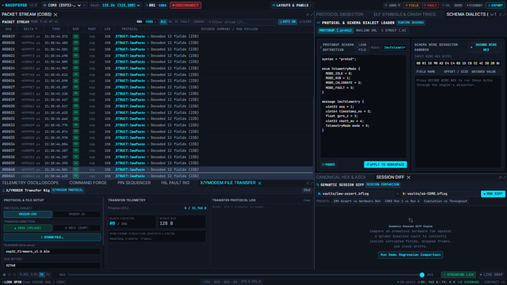
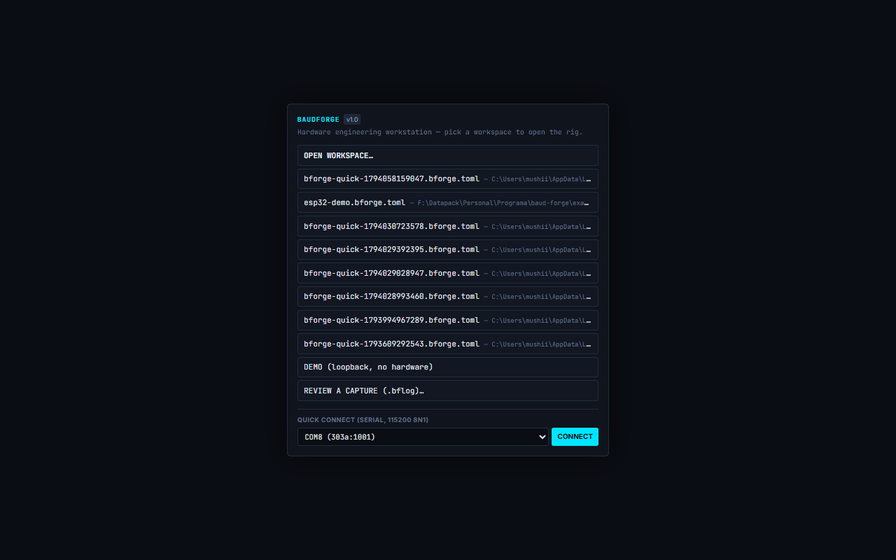

BaudForge Documentation
BaudForge is a hardware engineering workstation: it sits on the serial (or TCP) link between you and your device, captures every byte, decodes your protocol live, and gives you the instruments — oscilloscope, command console, fault injector, file transfer, MITM bridge — to debug, test and validate embedded firmware like electronics, not guesswork.
Everything you see here runs against the real engine (bforge-serve); every screenshot in this documentation was taken from the live application while it was decoding real telemetry from an ESP32-C3 over COM8.

What the workbench gives you
| Area | What it does | Documentation |
|---|---|---|
| Packet Stream | Every frame on the wire, decoded, filterable, exportable | Packet Stream |
| Protocol Dissector | Field-by-field decode of the selected frame | Protocol Dissector |
| Canonical Hex & ASCII | Byte-level view of the frame with field highlights | Hex Inspector |
| Telemetry Oscilloscope | Plot any numeric field; per-field trace lanes; cursors | Oscilloscope |
| DVR / Replay | Pause the live stream, step, scrub, replay at speed | DVR & Replay |
| Command Forge | Compose and send frames: hex, ASCII, or packed structs | Command Forge |
| Pin Sequencer | Drive DTR/RTS, timed pin sequences, bootloader presets | Pin Sequencer |
| HIL Fault Rig | Inject bit flips, drops, CRC corruption on the wire | Fault Rig |
| X/YMODEM Transfer | Send or receive files with a real XMODEM state machine | File Transfer |
| MITM Bridge | Join two links: tap or forward bytes between them | MITM Bridge |
| ELF Symbols | Firmware image loaded → addresses become function names | ELF Symbols |
| Schema Dialects | C headers, Protobuf, MAVLink — swap the decoder live | Schema Dialects |
| Session Diff | Compare a test run against a golden capture | Session Diff |
| Activity Log | One timeline of what the engine did and what you pressed | Activity Log |
| REC & Vaults | Record raw sessions to .bflog; review and export them |
REC & Vaults |
| Exports | CSV, Saleae, JSONL, PCAPNG for external tools | Exports |
Three ways to run
1. The desktop application
Launch bforge-desktop.exe (Windows; bforge-desktop on Linux/macOS). The launcher is the first screen:

- OPEN WORKSPACE… — pick a
.bforge.tomlfile; the engine starts in-process and the workbench opens. - Recent workspaces — one click re-opens a workspace you used before.
- DEMO (loopback, no hardware) — two simulated devices and a bridge, no board needed. Perfect first run.
- REVIEW A CAPTURE (.bflog) — open a recorded vault read-only; nothing records, nothing is damaged.
- QUICK CONNECT — pick a serial port, connect at 115200 8N1 without a workspace file.
2. The engine + a browser
target/release/bforge.exe serve -c examples/esp32-demo.bforge.toml --ui target/release/ui --duration 1h
Then open http://127.0.0.1:7717/. The engine owns the ports; any browser on the machine gets the same instruments. --duration bounds the session (e.g. 30s, 5m, 1h).
3. Development mode
cd ui && pnpm dev # workbench on http://localhost:5173 (proxies /api to the engine)
First session with real hardware (5 minutes)
Write a workspace file — a
.bforge.tomldescribing your port, framing and dissector. Start fromexamples/esp32-demo.bforge.toml:[workspace] name = "my-device" version = "0.1" [[ports]] id = "dev" # the name the workbench shows device_path = "COM8" # or match_vid_pid = "303a:1001" baud_rate = 115200 framing = { mode = "cobs" } # delimiter | cobs | slip | intel_hex | header_length | idle_gap dissector = { type = "c_header", file = "my_protocol.h", root_struct = "MyPacket" }Open the workspace in the desktop app or serve it.
The ribbon must read LINK OPEN — not SIMULATED. If the port is busy, see Troubleshooting.
Send something that makes the device talk (Command Forge → TRANSMIT, or the CLI):
curl -X POST http://127.0.0.1:7717/api/send -H "Content-Type: application/json" ^ -d "{\"port\":\"dev\",\"hex\":\"6D 6F 64 65 20 69 6D 75 0A\"}"Frames appear in the Packet Stream with decoded fields; click one — the Dissector, Hex view and scope follow.
Where to look when something misbehaves
Open LAYOUTS & PANELS → Activity Log. Every engine action (tx, rec_start, schema_apply_failed, overrun…) and every button you pressed is in one timeline — see Activity Log. When the vault is sealed, the same timeline is saved next to the capture as <vault>.activity.jsonl.
Deploying these docs
This site is static HTML in docs/site/. To publish it on GitHub Pages: Settings → Pages → Source: GitHub Actions, then push — the pages workflow deploys it automatically. Rebuild after editing docs/src/*.md:
cd ui && node scripts/build-docs.mjs